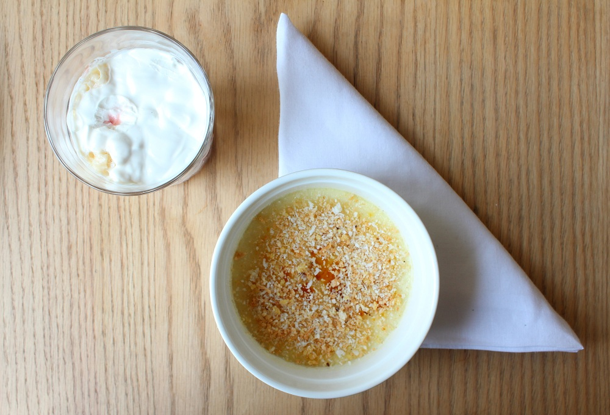

Restaurant's Review : Mirchi & Mime, Powai
 Enter Mirchi & Mime (M&M) and it looks like a bistro with wooden and beige-brown interiors. Ancient and modern cooking tools hang from a wall in one corner while a section of window panes is covered with printouts of age-old recipes. The open kitchen sends out wafts of meats and kebabs being grilled on tandoor.
Enter Mirchi & Mime (M&M) and it looks like a bistro with wooden and beige-brown interiors. Ancient and modern cooking tools hang from a wall in one corner while a section of window panes is covered with printouts of age-old recipes. The open kitchen sends out wafts of meats and kebabs being grilled on tandoor. Make a 'T' using both index fingers for a dish from the Tandoor section, show three fingers if you want dish number three. Your server will bring you the right dish, without uttering a word. This is because the servers at M&M are deaf and mute, and have been training for 14 weeks.
Make a 'T' using both index fingers for a dish from the Tandoor section, show three fingers if you want dish number three. Your server will bring you the right dish, without uttering a word. This is because the servers at M&M are deaf and mute, and have been training for 14 weeks.The menu displays a sign glossary, which tells you the gestures for each section and number for the dish. We pointed at the frosty Shikanji Bacardi Julep (Rs 250) – a nimbu pani twist on the regular mint julep, the drink was refreshing and perfect to beat the heat. The sweet Berry and Pomegranate Granita (Rs 150) was a cooling mocktail and the sweet berries with not-too-sweet pomegranate blended well.
 Interlock your little fingers to form an ‘S’ and point to number two for the Broccoli Masala Soup (Rs 185) - light with grana padano cheese adding a nutty flavour and thickness to the soup. The Kashmiri Nalli Shorba (Rs 185) works great as a one-bowl-meal. The dish came sealed with a thick and crusty roomali roti, similar to dum biryani which is sealed with a layer of dough. We tore the roti and dipped it in the light and tangy shorba. The mutton fell off the bone with a slight nudge of the spoon and turnips added a rich flavour to the dish.
Interlock your little fingers to form an ‘S’ and point to number two for the Broccoli Masala Soup (Rs 185) - light with grana padano cheese adding a nutty flavour and thickness to the soup. The Kashmiri Nalli Shorba (Rs 185) works great as a one-bowl-meal. The dish came sealed with a thick and crusty roomali roti, similar to dum biryani which is sealed with a layer of dough. We tore the roti and dipped it in the light and tangy shorba. The mutton fell off the bone with a slight nudge of the spoon and turnips added a rich flavour to the dish. The vegetarian galouti kebab in the Assorted Tava Platter (Rs 185) made us forget the mutton galouti. The platter serves four different kebabs made with water chestnut, jackfruit, arbi (colocasia roots) and mushroom; the kebabs were moist and spicy. The Shakarkand Chaat (Rs 185) was straight out of Pamela Timms’ Korma, Kheer and Kismet where she writes about the shakarkand chaat wallahs on the streets of Delhi. The deep-fried crunchy sweet potatoes were served on a bed of mash topped with tamarind chutney, pomegranate and dahi; it was a perfect plate of chaat. The menu is regional Indian but stays away from the regular features found at every other Indian restaurant. There’s attention to detail, both in cooking and presentation.
The vegetarian galouti kebab in the Assorted Tava Platter (Rs 185) made us forget the mutton galouti. The platter serves four different kebabs made with water chestnut, jackfruit, arbi (colocasia roots) and mushroom; the kebabs were moist and spicy. The Shakarkand Chaat (Rs 185) was straight out of Pamela Timms’ Korma, Kheer and Kismet where she writes about the shakarkand chaat wallahs on the streets of Delhi. The deep-fried crunchy sweet potatoes were served on a bed of mash topped with tamarind chutney, pomegranate and dahi; it was a perfect plate of chaat. The menu is regional Indian but stays away from the regular features found at every other Indian restaurant. There’s attention to detail, both in cooking and presentation. A few gestures later, the curry-leaf flavoured Yellow Mirchi Tikka (Rs 235) made its way to the table. The juicy chicken was marinated in yellow chilli and curry leaves and had a charred flavour. From the Sigri, the Duck Seekh (Rs 315) is a dish you shouldn’t miss if you’re an adventurous eater. The kebab had a mild sweetness and was garnished with finely-chopped bell peppers, herbs and orange rind.
A few gestures later, the curry-leaf flavoured Yellow Mirchi Tikka (Rs 235) made its way to the table. The juicy chicken was marinated in yellow chilli and curry leaves and had a charred flavour. From the Sigri, the Duck Seekh (Rs 315) is a dish you shouldn’t miss if you’re an adventurous eater. The kebab had a mild sweetness and was garnished with finely-chopped bell peppers, herbs and orange rind. The lobster variation of butter chicken, the Native Lobster Makhani (Rs 675) had beautifully cooked lobster in subtly sweet and tangy gravy. The dish went well with aromatic Aged Basmati Rice (Rs 95).
The lobster variation of butter chicken, the Native Lobster Makhani (Rs 675) had beautifully cooked lobster in subtly sweet and tangy gravy. The dish went well with aromatic Aged Basmati Rice (Rs 95).The English dessert Eton Mess (Rs 185) features on the menu. Served in a tall cutting chai-like glass, the dessert was layered with strawberry compote, bananas and fresh cream; perfect if you hate anything overly sweet. The Coconut Crème Brulée (Rs 185) had a crust of sweet coconut on the light and airy crème brulée.
 At M&M, unlike most restaurants, the concept does not overpower the food. The staff is more attentive than most restaurants and the hosts are happy to help if you can’t use sign language. The menu isn’t complicated and the simple glossary makes you realise that other restaurants can simply add a sign-language list and hire differently abled servers too.
Must Try : Shikanji Bacardi Julep, Assorted Tava Platter, Duck Seekh, Eton Mess
Meal For Two : Rs 1,500 + taxes (with alcohol)